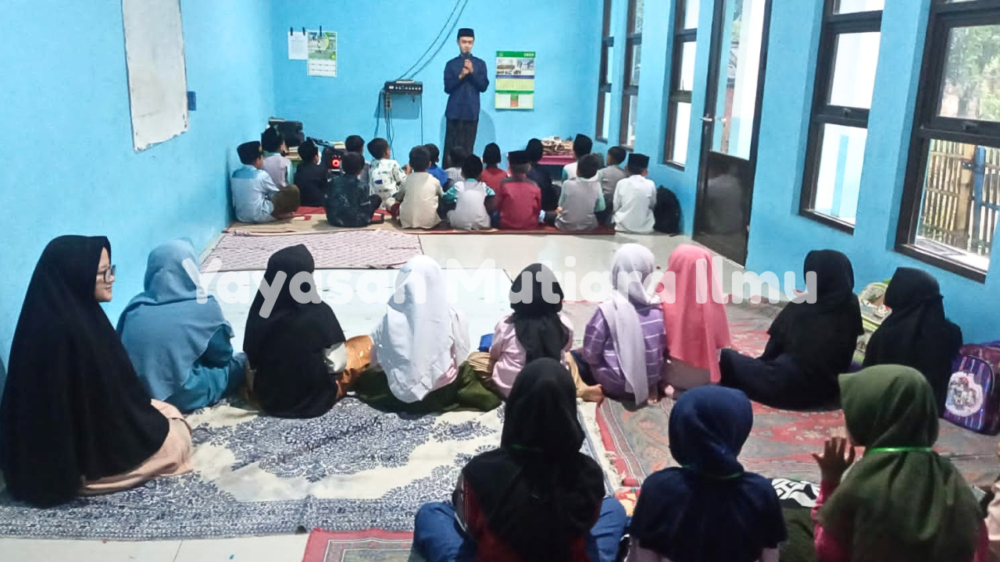

Diniyah Takmiliyah Awaliyah

Madrasah Diniyah Takmiliyah Awaliyah (DTA) Tarbiyatul Qur’an merupakan lembaga pendidikan keagamaan nonformal yang diselenggarakan setiap sore hari di bawah naungan Yayasan Mutiara Ilmu. Program ini hadir untuk melengkapi dan memperdalam pemahaman agama Islam bagi anak-anak usia sekolah dasar agar tumbuh menjadi generasi yang cakap membaca Al-Qur’an, taat beribadah, dan berakhlak mulia.

Profil DTA
Berdiri sejak tahun 2010 di Kabupaten Bandung, DTA Tarbiyatul Qur’an menjadi wadah pembinaan karakter Islami bagi santri selepas pulang sekolah formal.
Selain kegiatan belajar mengajar di kelas yang interaktif, para santri juga dibimbing untuk aktif dalam kegiatan kemakmuran masjid, pembiasaan shalat berjamaah, hingga partisipasi dalam berbagai Peringatan Hari Besar Islam (PHBI) agar nilai-nilai agama membumi dalam keseharian mereka.
Kurikulum
- 1Al-Qur’an & Hadits: Pembelajaran membaca Al-Qur’an sesuai kaidah tajwid (tahsin), hafalan surat-surat pendek (tahfidz juz 30), serta pengenalan hadits pilihan.
- 2Aqidah & Akhlak: Penanaman dasar-dasar keimanan (Rukun Iman), adab kepada orang tua, guru, dan sesama, serta pembiasaan akhlakul karimah.
- 3Fiqih Ibadah: Pemahaman tata cara bersuci (thaharah), praktik wudhu dan shalat fardhu yang benar, serta pengenalan ibadah harian.
- 4Tarikh Islam & Bahasa Arab: Pengenalan sejarah kenabian (sirah nabawiyah) sebagai teladan serta penguasaan kosakata dasar Bahasa Arab.
Keunggulan
1. Penguatan Baca Tulis Al-Qur’an (BTQ)
Pendampingan intensif sesuai tingkat kemampuan santri sehingga anak mampu membaca Al-Qur’an dengan tartil dan benar sejak dini.
2. Pembinaan Ibadah & Remaja Masjid
Santri tidak hanya belajar teori di kelas, tetapi dilatih langsung mempraktikkan ibadah berjamaah dan mencintai kegiatan Masjid Az-Zahir.
3. Lingkungan Belajar Agamis & Kondusif
Didukung tenaga pendidik yang sabar dan berdedikasi untuk membentuk benteng moral generasi muda di tengah perkembangan zaman.
Dengan sinergi antara orang tua, ustadz/ustadzah, dan lingkungan masyarakat sekitar, DTA Tarbiyatul Qur’an berikhtiar mencetak generasi penerus yang tidak hanya unggul dalam ilmu pengetahuan umum, tetapi juga kokoh pondasi agamanya. Mari daftarkan putra-putri Anda untuk tumbuh bersama keluarga besar Yayasan Mutiara Ilmu.